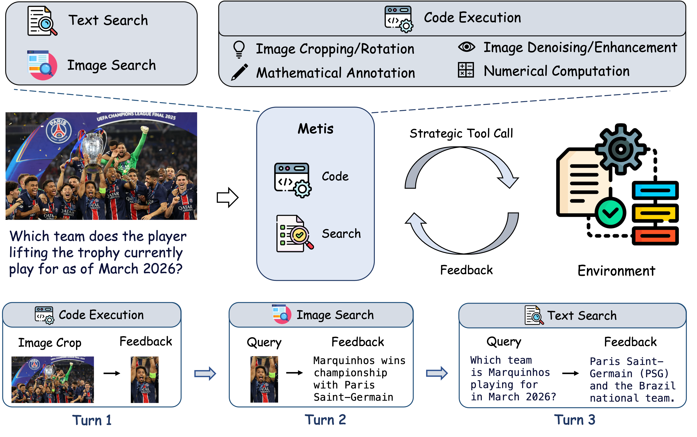
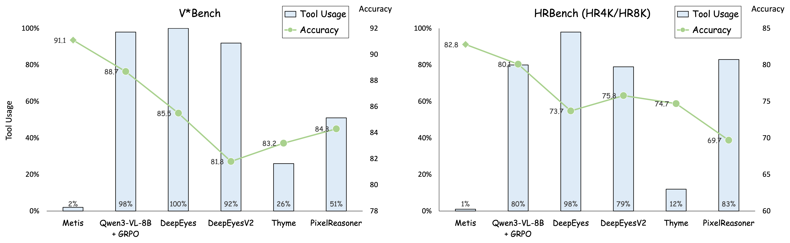
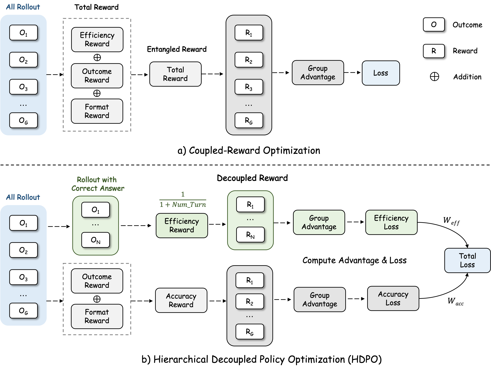
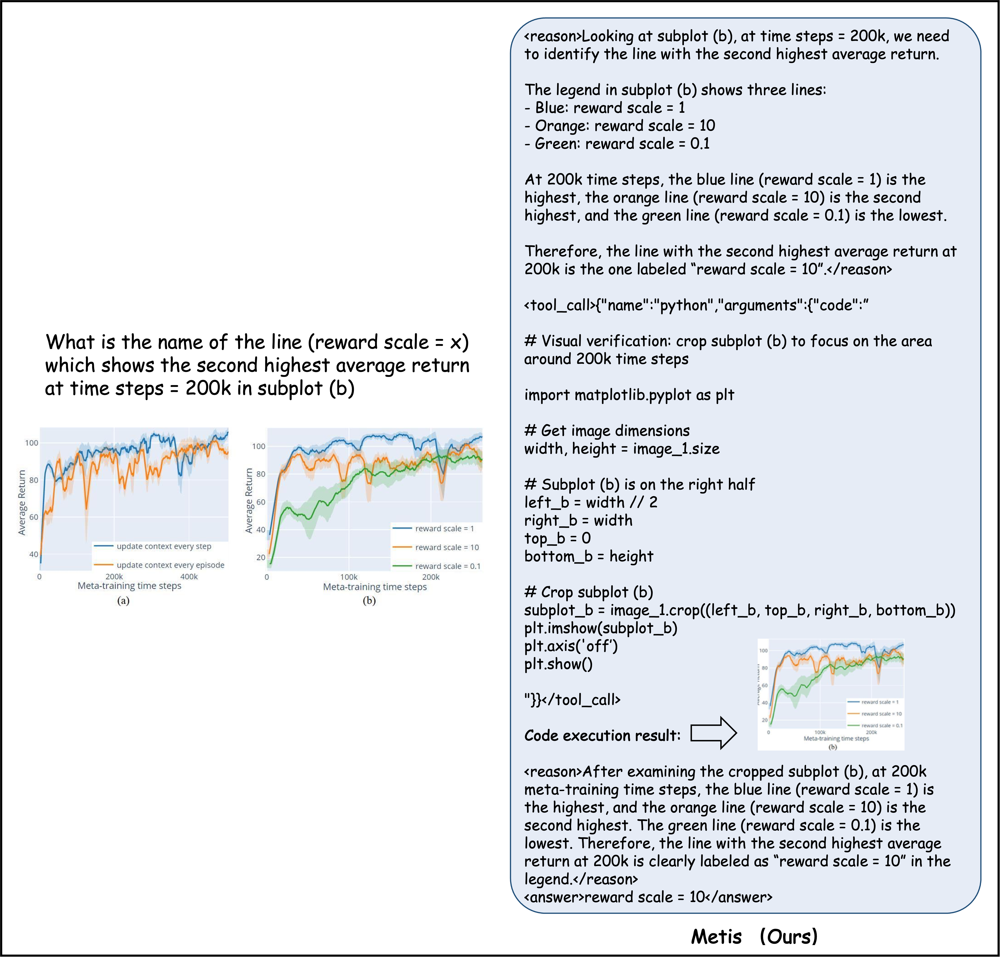

Act Wisely: Cultivating Meta-Cognitive Tool Use in Agentic Multimodal Models
Abstract
The advent of agentic multimodal models has empowered systems to actively interact with external environments. However, current agents suffer from a profound meta-cognitive deficit: they struggle to arbitrate between leveraging internal knowledge and querying external utilities. Consequently, they frequently fall prey to blind tool invocation, resorting to reflexive tool execution even when queries are resolvable from the raw visual context. This pathological behavior precipitates severe latency bottlenecks and injects extraneous noise that derails sound reasoning. Existing reinforcement learning protocols attempt to mitigate this via a scalarized reward that penalizes tool usage. Yet, this coupled formulation creates an irreconcilable optimization dilemma: an aggressive penalty suppresses essential tool use, whereas a mild penalty is entirely subsumed by the variance of the accuracy reward during advantage normalization, rendering it impotent against tool overuse. To transcend this bottleneck, we propose Hierarchical Decoupled Policy Optimization (HDPO), a framework that reframes tool efficiency from a competing scalar objective to a strictly conditional one. By eschewing reward scalarization, HDPO maintains two orthogonal optimization channels: an accuracy channel that maximizes task correctness, and an efficiency channel that enforces execution economy exclusively within accurate trajectories via conditional advantage estimation. This decoupled architecture naturally induces a cognitive curriculum—compelling the agent to first master task resolution before refining its self-reliance. Extensive evaluations demonstrate that our resulting model, Metis, reduces tool invocations by orders of magnitude (e.g., from 98% to 2%) while simultaneously elevating reasoning accuracy. By shattering the illusion that heavy tool reliance equates to better performance, Metis pioneers a shift from merely executing tools to cultivating the meta-cognitive wisdom of abstention.

Key Insights & Results

Tool-Use Efficiency vs. Task Performance
Existing methods rely heavily on tool calls. Metis uses tools selectively while achieving the best overall performance.

Coupled Reward vs. HDPO
Existing methods entangle accuracy and efficiency into a single reward signal, while HDPO decouples them into separate branches.

Direct Reasoning without Tool Invocation
Metis abstains from tool invocation and answers directly when the query is resolvable from visual context and parametric knowledge alone.

Targeted Code Execution for Fine-Grained Analysis
Metis strategically invokes code execution to crop and enlarge relevant regions when fine-grained visual analysis is needed.
Performance Results
| Model | V*Bench | HR4K | HR8K | TreeBench | MME-RW | SEED2+ | CharXiv(DQ) | CharXiv(RQ) |
|---|---|---|---|---|---|---|---|---|
| Open-Source Models | ||||||||
| LLaVA-OneVision | 75.4 | 63.0 | 59.8 | 37.3 | 57.4 | 65.4 | - | - |
| InternVL3-8B | 81.2 | 70.0 | 69.3 | 38.8 | - | 69.7 | 73.6 | 37.6 |
| Qwen2.5-VL-7B | 75.3 | 65.5 | 62.1 | 37.0 | 56.8 | 70.4 | 72.7 | 40.2 |
| Qwen2.5-VL-32B | 80.6 | 69.3 | 63.6 | 42.5 | 59.1 | 72.4 | 83.2 | 48.0 |
| Qwen3-VL-8B | 86.4 | 78.9 | 74.6 | 40.7 | 61.9 | 71.0 | 83.0 | 46.3 |
| Agentic Multimodal Models | ||||||||
| Pixel-Reasoner | 84.3 | 72.6 | 66.1 | 39.0 | 64.4 | - | - | - |
| DeepEyes | 83.3 | 73.2 | 69.5 | 37.5 | 64.1 | - | - | - |
| Thyme | 82.2 | 77.0 | 72.0 | - | 64.8 | - | - | - |
| DeepEyesV2 | 81.8 | 77.9 | 73.8 | 42.5 | 64.9 | 70.5 | 78.6 | 48.9 |
| Mini-o3 | 88.2 | 77.5 | 73.3 | - | 65.5 | - | - | - |
| SenseNova-MARS-8B | 92.2 | 83.1 | 78.4 | - | 67.9 | - | - | - |
| Skywork-R1V4-30B | 88.0 | 82.8 | 79.8 | - | 71.4 | - | - | - |
| Metis (Ours) | 91.1 | 83.5 | 82.0 | 45.2 | 70.3 | 72.5 | 83.4 | 54.1 |
Perception & Document Understanding Benchmarks
| Model | MathVista | MathVerse | WeMath | DynaMath | LogicVista | Avg. |
|---|---|---|---|---|---|---|
| Open-Source Models | ||||||
| LLaVA-OneVision | 58.6 | 19.3 | 20.9 | - | 33.3 | - |
| Qwen2.5-VL-7B | 68.3 | 45.6 | 34.6 | 53.3 | 45.9 | 49.5 |
| InternVL3-8B | 71.6 | 39.8 | 37.1 | - | 44.1 | - |
| Qwen3-VL-8B | 76.3 | 61.3 | 38.8 | 65.5 | 54.9 | 59.4 |
| Text-only Reasoning Models | ||||||
| MM-Eureka-7B | 72.6 | 50.3 | 21.8 | - | 46.3 | - |
| ThinkLite-VL-7B | 75.1 | 52.1 | 41.8 | - | 42.7 | - |
| VL-Rethinker-7B | 74.9 | 54.2 | 36.3 | - | 42.7 | - |
| VLAA-Thinker-7B | 71.7 | - | 35.7 | - | 45.9 | - |
| Agentic Multimodal Models | ||||||
| DeepEyes | 70.1 | 47.3 | 38.9 | 55.0 | 47.7 | 51.8 |
| Thyme | 70.0 | - | 39.3 | - | 49.0 | - |
| DeepEyesV2 | 71.9 | 52.7 | 38.1 | 57.2 | 48.7 | 53.7 |
| Metis (Ours) | 78.0 | 65.9 | 65.2 | 69.2 | 56.2 | 66.9 |
Mathematical & Logical Reasoning Benchmarks
| Method | V*Bench | HR4K | HR8K | CharXiv(RQ) | MathVista |
|---|---|---|---|---|---|
| Standard GRPO (wtool=0) | 88.7 | 81.0 | 79.2 | 51.0 | 76.9 |
| HDPO (wtool=0.10) | 88.0 | 83.5 | 81.0 | 52.7 | 77.4 |
| HDPO (wtool=0.15) ✔ | 91.1 | 83.5 | 82.0 | 54.1 | 78.0 |
| HDPO (wtool=0.20) | 87.4 | 82.5 | 80.5 | 51.5 | 77.2 |
Ablation: Effect of Tool-Efficiency Weight wtool
Contact & Opportunities
If you have any questions about this project, please feel free to contact:
BibTeX
@article{yan2026metis,
title={Act Wisely: Cultivating Meta-Cognitive Tool Use in Agentic Multimodal Models},
author={Yan, Shilin and Tong, Jintao and Xue, Hongwei and Tang, Xiaojun and Wang, Yangyang and Shi, Kunyu and Zhang, Guannan and Li, Ruixuan and Zou, Yixiong},
journal={arXiv preprint arXiv:2604.08545},
year={2026}
}